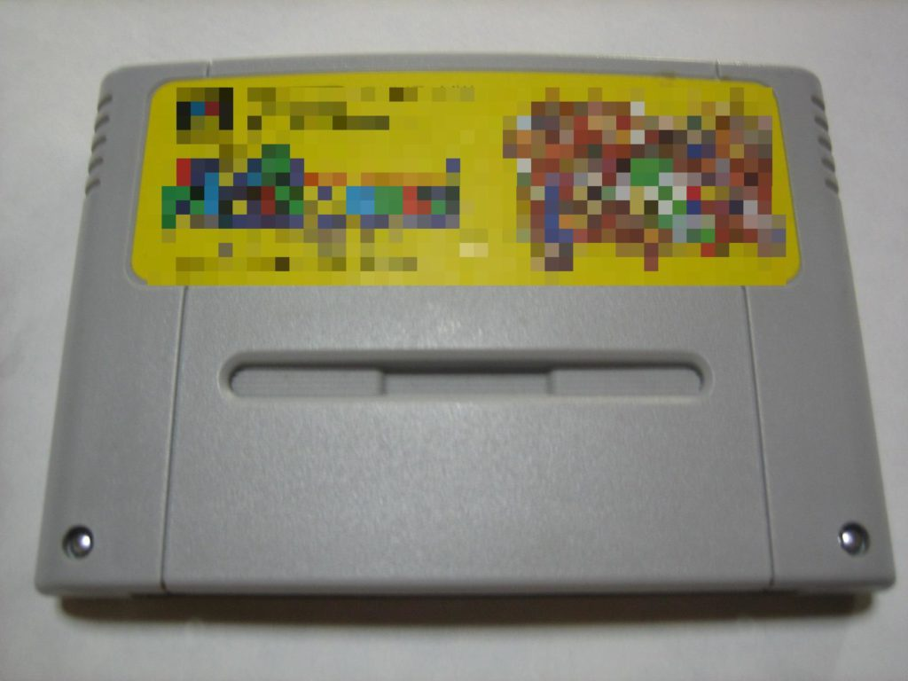

Ketentuan Hak Cipta Dalam Aktivitas Permainan Video
Menurut pasal 40 huruf Undang-Undang No. 28 Tahun 2014 (UUHC 2014), permainan video merupakan obyek perlindungan hak cipta.
Sejauh apa Undang-Undang Hak Cipta memberikan perlindungan pada permainan video?
Aspek Hak Cipta Dalam Permainan Video
Aktivitas di ranah permainan video (video game) biasanya melibatkan beberapa pihak, yakni pembuat permainan video (pencipta, pengembang, dan/atau penerbit) suatu permainan video orisinal, pengguna atau pemain permainan video, dan pebuat suatu permainan video yang merupakan ciptaan turunan dari permainan video lainnya.
Mari kita mulai dengan membahas dari sudut pandang perlindungan dan pelanggaran terlebih dahulu.
Dalam aktivitas tersebut, pihak-pihak selain pencipta atau pengembang permainan video orisinal akan dihadapkan pada pilihan untuk mengakses konten-konten permainan video secara resmi (legal) atau tidak resmi (illegal). Banyak hal yang dapat menjadi tolak ukur untuk menyatakan resmi atau tidaknya suatu aktivitas pengaksesan konten permainan video. Penyediaan akses resmi dan non-resmi ini bisa dilakukan di dalam jaringan maupun di luar jaringan. Aktivitas tersebut dapat disebut resmi apabila kita mendapatkan konten tersebut dari penyedia konten yang telah mengantongi ‘persetujuan resmi’ dari pihak pencipta atau pengembang suatu permainan video. Atau, bisa saja suatu tempat yang menjajakan atau menyewakan permaian-permainan video tersebut hanya menyediakan konten-konten ‘non-bajakan’ yang mereka beli secara langsung dari agen resmi maupun dari pengembangnya langsung, untuk dijual kembali atau sekedar disewakan.
Dalam prakteknya, pihak pengelola tempat persewaan menyediakan kopian dari suatu permainan video yang didapat secara resmi (atau tidak resmi), untuk kemudian dapat disewa oleh pihak penyewa dengan membayar sejumlah uang kepada pihak pengelola tempat persewaan. Kopian tersebut kemudian dapat dibawa pulang oleh pihak penyewa, untuk kemudian dipasang, atau terkadang digandakan perangkat pemasangannya ke komputer personal pihak penyewa.

Apakah aktivitas pemasangan permainan video sewaan tersebut pada perangkat keras milik pihak penyewa merupakan suatu pelanggaran hak cipta?
Atau, penggandaan perangkat pemasangan (installer) tersebut yang dapat dianggap sebagai pelanggaran hak cipta?
Aktivitas penyewaan ciptaan diatur dalam Pasal 9 UUCH, yang menyatakan bahwa penyewaan ciptaan harus dilakukan dengan izin langsung dari pencipta, dan setiap penggandaan atau penggunaan secara komersial tanpa izin pencipta, dilarang.
Pada dasarnya, kedua hal tersebut merupakan pelanggaran hak cipta, jika kita berbicara dalam konteks permainan video untuk komputer personal. Karena, biasanya permainan-permainan tersebut dilengkapi dengan nomor seri (serial numbers). Nomor seri permainan video ini merupakan mekanisme perlindungan yang dibuat oleh pihak pembuat permainan. Dengan adanya nomor seri, maka hanya pemilik resmi permainan video tersebut yang dapat memainkan dan memasangnya di komputer personal milik pihak tersebut. Pihak-pihak lain, misalnya seseorang yang berada dalam satu rumah dengan pemilik resmi pun, harus memiliki nomor seri dari permainan video yang ia miliki juga secara resmi.
Artinya, dapat dipastikan bahwa seluruh permainan video untuk komputer personal yang disewakan telah diretas (crack) mekanisme perlindungannya, sehingga permainan video tersebut dapat dimainkan dan dipasang oleh banyak penyewa.
Meskipun pihak yang menyewakan bukan merupakan pihak peretas, dapat disimpulkan bahwa hampir seluruh kegiatan persewaan permainan video adalah pelanggaran hak cipta, menurut Pasal 9 UUHC 2014.
Maka, pihak yang menyewakan dapat terjerat ketentuan pasal tersebut, sebagai penyedia konten hasil pelanggaran hak cipta. Selain itu, pihak pemain juga dapat ikut serta terjerat karena telah menjadi pengguna konten hasil pelanggaran hak cipta. Tentu saja akibat hukum yang akan diterima oleh masing-masing pihak pelanggar akan berbeda-beda. Tergantung jenis pelanggaran yang telah dilakukan oleh masing-masing pihak tersebut.
Dan, tentu saja hal yang sama juga berlaku bagi pihak-pihak yang menjual (bukan menyewakan) konten-konten yang sama, berdasarkan Pasal 10 UUHC 2014 yang berbunyi:
“Pengelola tempat perdagangan dilarang membiarkan penjualan dan/atau penggandaan barang basil pelanggaran Hak Cipta dan/atau Hak Terkait di tempat perdagangan yang dikelolanya.”
Jika kita berbicara dalam konteks permainan video konsol, praktik pelanggarannya sama, namun hanya berbeda tempat dan pola penyewaannya. Mirip dengan tempat bermain Arcade Games, biasanya pihak pengelola tempat persewaan menyediakan konsol permainan, dan menggunakan hard-drive internal maupun eksternal sebagai pengganti kaset permainan video. Kemudian, pihak penyewa hanya tinggal datang untuk bermain dengan menggunakan konsol dan permainan video yang tersimpan pada konsol tersebut. Besar kemungkinan, permainan-permainan video yang tersimpan dalam konsol tersebut juga merupakan hasil dari peretasan kaset video, agar dapat dimainkan di banyak konsol sekaligus.
Platform jenis ini menggunakan suatu jenis perlindungan berupa Digital Rights Management (DRM), atau Sarana Kontrol Teknologi. Pada dasarnya metode perilindungan yang digunakan oleh permainan video untuk komputer personal juga berupa DRM, namun pengaplikasiannya berbeda dengan permainan video konsol. Sebagai contoh, X-Box One menerapkan DRM yang membuat kaset permainan video konsol tersebut hanya dapat digunakan oleh satu konsol saja. Pemain lain yang juga memiliki konsol X-Box One tidak dapat menggunakan permainan tersebut pada konsol yang dimilikinya. Kebijakan ini menuai protes dari banyak pemain karena dirasa bertentangan dengan kegiatan pinjam-meminjam kaset permainan video antara pemain. Akhirnya pihak pengembang X-Box One akhirnya tidak lagi memberlakukan metode perlindungan tersebut pada kaset-kaset permainan X-Box One. Untuk model permainan video ini, bentuk pelanggarannya kurang lebih sama dengan perminan video untuk komputer personal. Tetap ada kemungkinan seorang cracker menembus DRM yang diterapkan oleh pengembang X-Box One, entah untuk keperluan personal maupun komersial.
Dalam ranah permainan video dalam jaringan (online gaming) terdapat bentuk pelanggaran yang berbeda lagi. Bentuk pelanggaran ini berupa pembuatan server pribadi (private server) tanpa izin dari pihak pembuat permainan. Pelanggaran ini terdiri dari dua rangkaian perbuatan. Yang pertama, seseorang yang memiliki pengetahuan peretasan yang mumpuni dapat saja menembus kode-kode yang digunakan oleh pembuat permainan video orisinal untuk membuat sebuah server pribadi. Dengan bermodalkan kode-kode orisinal dari permainan video dalam jaringan yang ditembusnya, seorang peretas dapat membangun (engine) sebuah server baru, beserta ‘modifikasi-modifikasi’ untuk membuat server ini unik dan berbeda dengan server aslinya. Selain itu, pihak peretas juga dapat memodifikasi ‘unsur seni’, seperti desain peta, dan karakter, dan menyesuaikannya dengan kebutuhan server pribadi yang dibuatnya. Sebagai contoh, Anda dapat melihat bagaimana server personal sangat berkembang di permainan Ragnarok Online, dan bagaimana usaha pembuatan server personal mengalami hambatan di kalangan pemain World of Warcraft.
Perbuatan ini tidak akan disebut sebagai pelanggaran jika pihak pembuat permainan video tersebut memang mengumumkan kode dan unsur seni dari permainan tersebut. Pihak pembuat permainan video juga dapat, menerapkan lisensi terbuka, pada kode-kode atau mesin penggerak serta ‘unsur seni’ permainan tersebut.
Aktivitas Mengunduh Berkas Permainan Video dan Permainan Video “Terbuka”
Dalam perkembangannya, hampir semua permainan video dari berbagai konsol dapat ditemukan berkas-berkas digitalnya di dalam jaringan. Hal ini juga memungkinkan para pemain untuk mengakses kembali permainan-permainan video pada masa lampau. Berbeda dengan permainan video yang memang tersedia untuk dimainkan pada komputer personal. Permainan-permainan dari konsol seperti Play Station (1 & 2), SNes, GBA, atau bahkan MSDos-Games memerlukan alat-alat tertentu agar dapat dimainkan dengan komputer personal. Alat-alat ini terdiri dari Emulator, dan ROM. Emulator merupakan perangkat lunak yang menjadi pengganti fungsi perangkat keras konsol ketika permainan video dimainkan di komputer personal. Sedangkan ROM adalah berkas digital dari permainan video, yang tidak memiliki versi resmi untuk dimainkan di komputer personal. Kaset-kaset permainan ini tadinya beredar dalam bentuk cakram padat, cartridge, dan Disket.

{kind=link}
Sama halnya dengan musik dan film, aktivitas mengunduh atau menggandakan permainan-permainan video ini merupakan pelanggaran hak cipta. Meskipun aktivitas-aktivitas tersebut dapat dikecualikan dengan dalih “penggunaan wajar” (fair use), namun dalih itu kecil kemungkinannya dapat memperkuat kepastian hukum dalam aktivitas tersebut.
Terdapat beberapa metode yang dapat menjamin kepastian hukum aktivitas pengunduhan, penggandaan, pemodifikasian, dan penggunaan permainan video.
Anda dapat memanfaatkan fasilitas dari situs-situs seperti Steam, atau komunitas seperti Reddit dan Wikipedia untuk mengakses permainan-permainan video secara gratis dan legal. Meskipun, tidak semua permainan video tersebut menerapkan lisensi terbuka yang memungkinkan Anda untuk membuat modifikasi atau ciptaan turunan dari permainan-permainan video tersebut. Sebenarnya, keberadaan permainan video gratis dan terbuka juga sudah banyak. Permainan-permainan ini umumnya bukan dibuat dan diterbitkan oleh pihak pengembang ‘besar’. Istilah yang akrab digunakan pada permainan-permainan ini adalah Indie Game. Banyak dari judul-judul permainan video yang menganut keterbukaan tersebut dapat diakses di Wikipedia.
Sebagai contoh, kita dapat melihat ketentuan lisensi yang diterapkan oleh beberapa permainan seperti Ryzom, O A.D., dan Astro Menace. Permainan-permainan ini menerapkan lisensi GPL pada kode dan mesin penggeraknya, yang disertai dengan penerapan lisensi CC BY-SA pada unsur seni dari permainan-permainan tersebut. Dengan diterapkanya lisensi-lisensi tersebut, selain Anda dapat dengan gratis mengakses dan menggunakan permainannya, Anda juga dapat membangun sesuatu dari permainan-permainan video itu. Budaya bebas atau budaya terbuka ini tidak sepenuhnya hanya populer pada permainan video independen saja. Sebuah pengembang besar, Bethesda Softworks, juga menyediakan developer kits bagi pemain-pemain yang berkeinginan untuk membangun sesuatu dari apa yang dibuat oleh Bethesda Softworks. Anda juga dapat membaca daftar perusahaan perminan video komersial yang membagikan kode dari mesin penggeraknya di Wikipedia. Selain itu terdapat juga situs seperti Open Game Art yang menyediakan desain-desain yang dapat Anda gunakan untuk permainan video yang Anda bangun. Penggunaan konten-konten dengan keterbukaan akses ini dapat menghindarkan pembuat permainan video independen, yang merupakan ciptaan turunan dari suatu permainan video orisinal, tuntutan dari pihak pembuat permainan video orisinal.

Ranah permainan-permainan video ‘tua’ memiliki konsep keterbukaan yang berbeda. Kebanyakaan dari permainan-permainan ini sukar untuk diakses, entah di dalam jaringan maupun di luar jaringan. Pembuat-pembuat permainan ini juga banyak yang sudah tidak memperhatikan hak-hak yang dimilikinya terhadap permainan-permainan video yang dibuatnya. Hal ini membuat istilah Abandonware naik ke permukaan. Abandonware merupakan kumpulan permainan video yang sudah tidak ‘diurusi’ lagi oleh penciptanya. Banyak dari permainan video yang termasuk sebagai Abandonware dapat kita akses di dalam jaringan melalui situs seperti Archive.org dan Myabandonware.com.
Di Indonesia
Penerapan lisensi terbuka masih belum terlacak pada permainan-permainan video yang dibuat oleh pembuat permainan video dari Indonesia. Tentu saja, keberadaan pembuat-pembuat permainan video di Indonesia tidak kalah kualitas dan kuantitasnya, jika dibandingkan dengan pembuat dari luar Indonesia. Namun, keterbukaan, dalam hal pemodifikasian dan pembuat ciptaan turunan, atas permainan-permainan tersebut masih belum dapat diidentifikasi. Sementara itu kita dapat menjumpai permainan video-permainan video buatan Indonesia dalam berbagai platform seperti yang dimainkan di browser, di install di komputer personal, maupun dimainkan di telepon pintar.
Sumber:
Is Downloading Retro Video Game ROMs Ever Legal? - How To Geek
Tags:
Oleh: Hilman Fathoni
8 Sep 2016Kategori:
Berita Terbaru
- Lokakarya Hak Cipta dan Lisensi Creative Commons di Pekanbaru
- Pengumuman Resmi: Hasil Akhir Training of Trainers Creative Commons Indonesia
- Literatur tentang Model Bisnis Terbuka "Made With CC"
- Data dan Artikel Ilmiah Terbuka dari PLOS!
- Konten Format Model 3 Dimensi Berilsensi CC di Platform Sketchfab